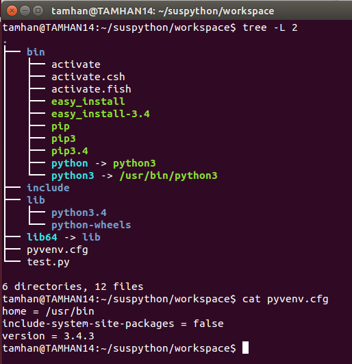

Kizza Fredrich Kibalama
About Me
I am passionate about technology, digital innovation, and web development. Learn more about my professional work on LinkedIn.
I enjoy learning web development from MDN Web Docs.
My Interests

My interests include web development, blockchain innovation, and digital products. I follow technology updates on TechCrunch.